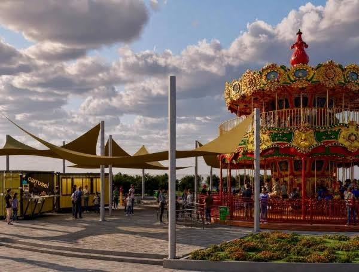
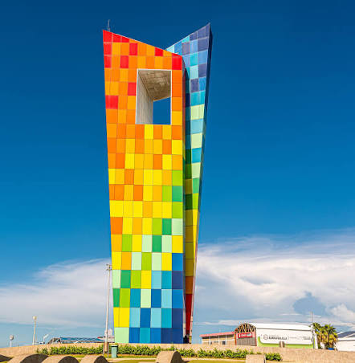
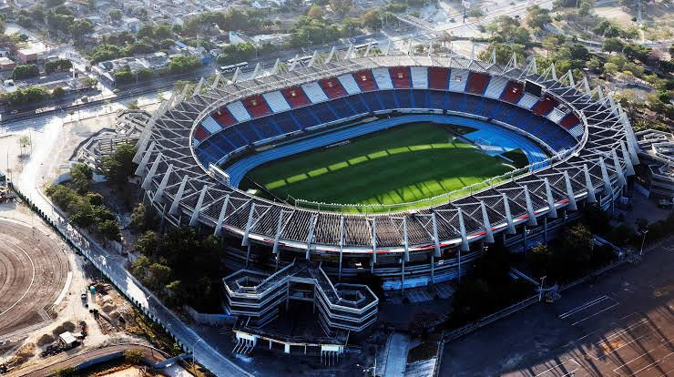
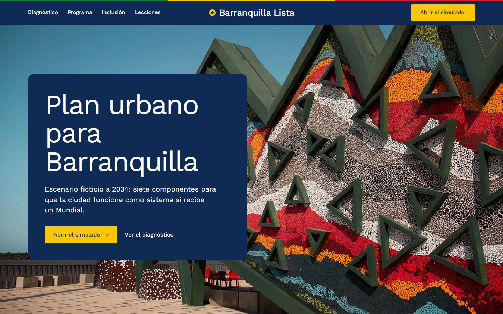

Barranquilla para su gente
Sombra para caminar, arroyos que no detengan la ciudad y buses que lleguen. El Mundial 2034 es un medio para lograrlo, no el fin.



De dónde partimos
-
Calor
Más de 5 °C
de diferencia en la temperatura de superficie entre los barrios más pobres y las zonas más ricas.
Fuente: Banco Mundial, 2025.
-
Transporte
29,5 → 13,6 millones
de pasajes registrados en Transmetro, entre 2019 y 2025.
Fuente: Gabriel Olier, 11 de octubre de 2026.
Análisis independiente, sin contrastar con un informe oficial.
-
Arroyos
14.200 toneladas
de residuos retiradas de arroyos, caños y drenajes en lo corrido de 2026.
Fuente: Alcaldía, citada por El Tiempo, 20 de octubre de 2026.
Balance parcial, sin verificación independiente.
Qué proponemos
Seis cambios para la vida diaria, con evento o sin él. Son propuestas del equipo: ninguna está aprobada.
Ciudad fresca y verde
Rutas con sombra, agua y descanso, más árboles y cuidado de la Ciénaga de Mallorquín.
Ciudad que no se detiene
Drenaje, menos basura en los arroyos, alertas y respaldo de energía en servicios críticos.
Moverse fácil y accesible
Transporte integrado, andenes continuos e información clara de las rutas.
Ciudad que avisa y responde
Datos de calor, lluvia, energía y movilidad, y reportes ciudadanos que reciban respuesta. Sin internet: radio, líderes de barrio y atención presencial.
Oportunidades en el barrio
Vendedores, jóvenes y cultura local dentro de la economía de la ciudad y de sus grandes eventos.
Cuentas que se vigilan
Presupuesto abierto, veedurías de los barrios y un responsable permanente.
Un medio, no el fin
El proyecto es la ciudad. El Mundial 2034, como mucho, una fecha para cumplirlo. Antes de aprobar una obra preguntamos:
- ¿La necesitaríamos aunque no hubiera Mundial?
- ¿Mejora la vida en los barrios que más la necesitan?
- ¿Se puede hacer sin desplazar a nadie contra su voluntad?
La ruta
Cómo llegar por etapas. No es un plan aprobado y depende de acuerdos y presupuesto.
-
2026–2027 Medir y empezar
Propuesta
- Medir, revisar sedes y crear la entidad de legado.
- Empezar la sombra, el plan de drenaje y el respaldo de energía.
- Acordar con los vendedores antes de intervenir.
-
2028–2030 Obras para cada día
Propuesta
- Ampliar la sombra, primero en sur y occidente.
- Obras de drenaje e integración de buses.
- En 2030, confirmar o dejar la sede.
-
2031–2033 Completar y ensayar
Propuesta
- Acuerdos que superen las elecciones.
- Completar el respaldo de energía en salud.
- Ensayar desde 2032, si hay sede.
-
2034 Una fecha para cumplir
Propuesta
- Plan de transporte, salud y agua.
- Cumplir lo acordado con los vendedores.
- Zona de aficionados en el sur.
-
Después de 2034 Lo que continúa
Propuesta
- Retirar montajes y rendir cuentas.
- Mantener sombra, drenaje y buses.
- Sedes abiertas al deporte de barrio.
Lo que queda
Proponemos que esto siga, haya Mundial o no.
- Datos abiertos para todos.
- Un mapa público de la ciudad.
- Puntos de atención sin necesitar celular propio.
- Una entidad que cuide lo logrado.
Lo que ya puedes ver
-

Mapa de rutas
Para saber qué bus tomar, sin transbordos, y ver la accesibilidad del destino cuando hay datos.
- Elige tu destino.
- Indica tu salida.
- Mira qué bus te sirve.
-
Nova
Nuestro prototipo ya funciona: le preguntas y responde con voz y en pantalla. La meta es llevarlo a las paradas. Necesita internet, no un celular propio.
Escuela de ciudad: Generación 2034
Cursos cortos y gratuitos para que niños, jóvenes y adultos conozcan los problemas de Barranquilla y sepan qué hacer.
Preguntas frecuentes
¿Todo esto depende del Mundial?
No. El proyecto es la ciudad y el Mundial sirve para ponerle fecha. Si no llegara, la sombra, el drenaje y los buses seguirían haciendo falta.
¿Es un plan aprobado?
No. Son propuestas del equipo Andromeda. Todavía no se ha contactado a las entidades que tendrían que participar.
¿De dónde salen las rutas?
Del Área Metropolitana de Barranquilla (87 recorridos de buses) y de OpenStreetMap (4 de Transmetro).
¿Cómo se elige qué bus me sirve?
Se sugiere una ruta si hay dónde subir y bajar a menos de 800 m de tu salida y de tu destino, siguiendo el sentido del recorrido. Primero salen las que piden menos caminata. No hay transbordos.
¿Puedo saber si un lugar es accesible?
Para seis destinos hay datos de fichas de TUR4all. No son una auditoría del equipo ni una certificación oficial, y si un lugar no tiene datos, no se muestra nada.
¿Qué es Nova?
Es nuestro prototipo, que ya funciona: un dispositivo con inteligencia artificial, micrófono, parlante y pantalla, conectado a internet. La meta es que cualquier persona pueda preguntarle cómo llegar y recibir la respuesta hablada y escrita.
¿Puedo usar mi ubicación?
Sí, si das permiso al navegador. Si no, elige tu salida en la lista de lugares.
Participa
¿Qué le falta a esta propuesta? Escríbelo en GitHub (pide una cuenta).